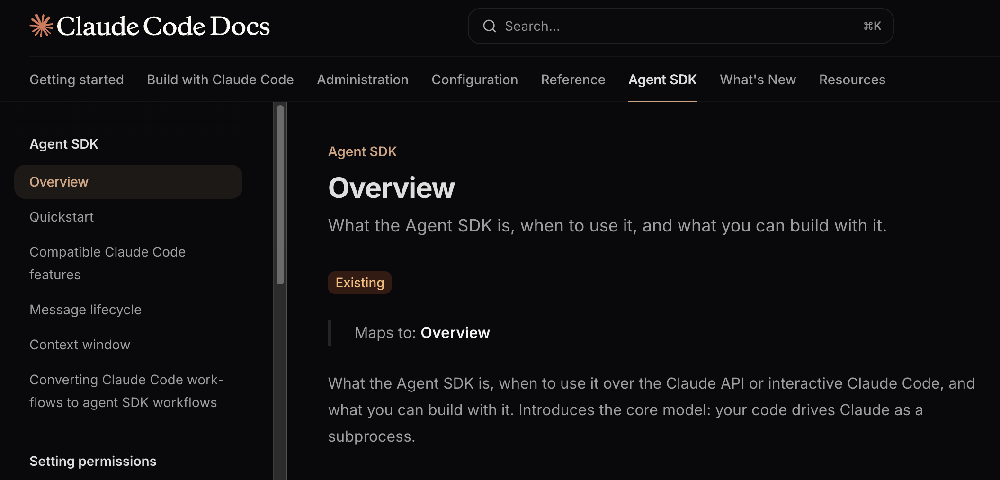
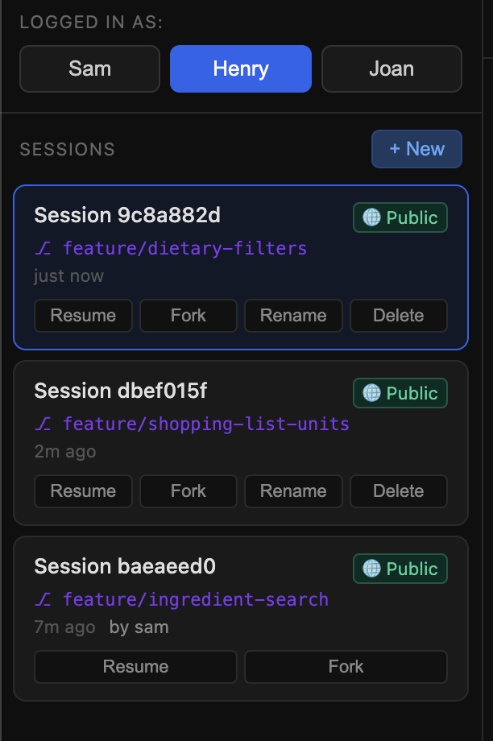
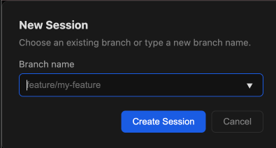
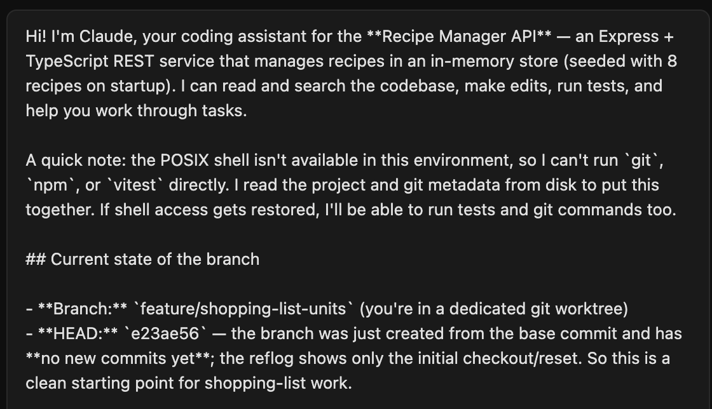
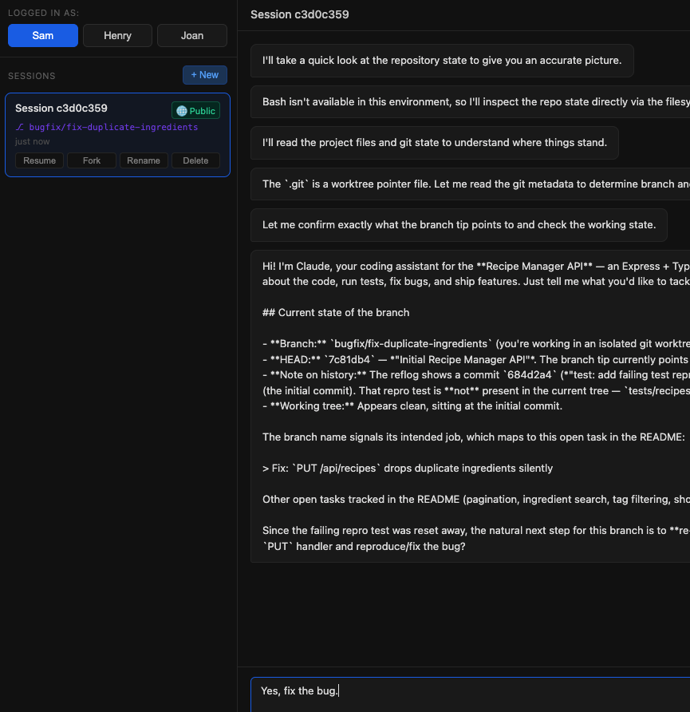

Agent SDK Docs Exercise
My response to the take-home work for the Claude Code Agent SDK contract position. Part A covers the restructure plan and Part B covers the sample application.
Source code for this work is at https://github.com/timothymcmackin/claude-agent-sdk-takehome.
Part A1
Navigation tree
Rubric prompt
A proposed navigation tree for the Agent SDK docs set: indented list or boxes, with a short description of what the page would cover and whether it's net-new or existing content.
One of the great things about static site generators is that it's easy to move things around and show what a new organization would look like, so I went ahead and mocked this site up. It covers the top-level navigation and each page lists a quick summary of what would be in that page and whether it is net-new content or taken from an existing page. (I couldn't get this running on Mintlify in short order, so I borrowed the styling from the existing site and deployed it to Netlify.)
tpm-claude-code-agent-sdk-mockup.netlify.app

Proposed navigation
Here is the top-level layout of the new navigation with a quick description of each page:
Principles
I used these basic principles to rework the navigation:
- Developer documentation is task-based; docs should tell users and agents how to do things, and titles should relate to tasks that people implementing software with the SDK need to do.
- Navigation is a bit more important for humans than agents; structure the nav for human eyes and let agents use the docs MCP server to find what they need.
- Structure docs, examples, and scenarios according to enterprise use cases; start with simple examples but move promptly to examples that take into account the scale of applications we expect customers to create with the SDK. Similarly, when there are options, put the methods that make more sense for enterprise use cases first (for example, streaming queries before individual queries).
- Separate TypeScript and Python SDK references because users are likely using only one or the other, and they have some structural differences.
- Make sure that docs for specific user roles are grouped together. For example, the people looking at cost and usage are not the same people controlling agent behavior with hooks and setting permissions, yet they're currently in the same section. In the long term, the SDK reference should be tailored for agents and should not strain the size of their context.
Part A2
Diagnosis
Rubric prompt
What you consider to be the top 3 problems with the docs now.
1. Developer documentation should be task-based
The docs need to be task-based, focusing on the tasks that enterprise users need to do while building large-scale applications on the Claude Agent SDK. Concepts like "How the agent loop works" and how context is handled within the SDK are important reference information, but I don't think the high hit count on those pages is enough evidence to keep them at their current prominent level. More thorough task-based information on sending queries and receiving and handling output would reduce the need for developers to refer to how the communication works until they're dealing with problems or technically complex cases.
The docs need to be structured around tasks like sending requests to Claude Code, storing and resuming sessions, adding custom tools, and bundling the SDK in hosted applications. Eventually we can document higher-level tasks like managing codebases with the SDK and restructure the information around embedding Claude Code in larger applications. Those high-level tasks will help customers build their own complex agentic applications that use Claude Code as an engine.
2. Docs must focus on enterprise use cases
The examples are often not enterprise use cases. Based on my understanding, the main use case for the Agent SDK is to create an application that manages a codebase with a specific goal and set of custom tools. The simple example in the quickstart is fine, but the examples need to expand quickly to assume the user is building an application to write, test, update, and otherwise manage a codebase over time. For example, we might pick the most common way that applications store sessions (probably in external storage as described in "Persist sessions to external storage") and use that pattern in most examples. It may make examples a bit longer and more complex, but users will be able to bring them into their own code faster.
3. Docs need to be organized around user and agent roles
Currently, single sections group information that focuses on different user and agent roles. Audit information is in the same section as setting permissions and controlling agent behavior with hooks — information that may be needed by different people. I'd work with product management to confirm the user and agent roles, but in my experience, I see these common enterprise roles:
| Role | Doc need |
|---|---|
| Decision-makers | Information about whether the product can solve their business problem |
| Architects | Information to plan how the product fits into their tech stack and planned applications |
| Implementers | Information on developing software functionality like sending queries and handling responses |
| Agents | Task-based information and reference material about methods, types, and other code details |
More detailed analysis of page view rates and documentation MCP server usage can also inform this list of main user and agent roles.
Part A3
Week one ship
Rubric prompt
For your #1 problem: what would you ship in week one to address this, and why that first?
Rewrite of the overview page
The questions asked to the docs AI assistant suggest that it's not clear what the Agent SDK is intended to do and how it fits into the Claude ecosystem, so that seems to be an urgent need. The overview page receives 24% of all Agent SDK section traffic — the most of any page — making it the highest-leverage single page to fix. My first ship would do two things:
- Clear the clutter. Rewrite the overview page to remove setup instructions (better covered in the quickstart or a separate installation page) and move everything that isn't positioning- or use-case-oriented elsewhere.
- Lead with scenarios. Focus the overview on specific scenarios we expect customers to use the SDK for. Describe it as a codebase manager and custom agent creator, and draw from the examples in the claude-agent-sdk-demos repository to show how the SDK can create custom agents, agentic tools, and assistants that help developers work on large, complex codebases.
After this change, we should continue to monitor the questions users ask the docs AI assistant and the areas of confusion that surface, such as a user trying to force the SDK to do something it isn't intended to do. In my work at TriliTech, the MCP server logs were tremendously useful for showing what users were actually trying to do with our software, which helped ensure the docs stayed focused on real user perspectives.
I chose this over the higher-level task of reorganizing the docs because I'd want to spend more time researching with product management before acting on the assumptions I made in the A1 restructure.
Part A4
Cookbook outline
Rubric prompt
One cookbook outline: the most-needed end-to-end guide for users — title, target reader, and section headings only (no prose/actual building needed, just the scaffolding). The following cookbook and demo collections already exist; your outline doesn't need to duplicate what's there: claude-cookbooks, platform.claude.com/cookbook, claude-agent-sdk-demos.
The three existing cookbook collections include examples of using custom tools, but I didn't find a cookbook that pulled several related tools together into an embedded MCP server — a full interface that lets an application participate in the complexities of an enterprise codebase, such as complex monorepo CI procedures. An embedded MCP server also demonstrates how the SDK lets you:
- Point Claude Code to how certain tasks need to be done rather than relying on it to figure them out
- Give Claude Code access to specific commands, data, or applications your application uses
- Build what is essentially a custom agent with specific capabilities, using Claude Code as the engine
Target reader: CI engineers and software architects who have been using the SDK for small to medium tasks and want to scale its use across a large codebase or share codebase procedures and guidelines across multiple repositories.
Providing custom tools as an embedded MCP server
- Introduction
- Why bundle tools as an embedded MCP server
- When to use this approach
- Related documentation: Embedded MCP servers
- Setup
- Prerequisites
- Starting from a basic SDK application
- Connecting to a remote MCP server
- Adding custom tools
- Map a general instruction to a specific CI workflow (e.g., "Lint the code")
- Generate and verify test coverage for new code
- Request user approval before triggering a deployment
- Return structured data in a specific format
- Analyze git history and report file changes
- Restrict a tool to users with specific permissions
- Pass an API key securely to a tool
- Run a performance test and compare against a baseline; rewind on regression
- Start a containerized mock service, run tests, then shut it down
- Handle tool errors gracefully with retry logic
- Summary
- When to use (and not use) embedded MCP servers
- Next steps: Tool scaling for large tool libraries
Part B
Sample application — Saving sessions to external storage
Rubric prompt
Build an example you think the page would benefit from: working code in both TypeScript and Python, plus the surrounding prose as it would appear on the page introducing and explaining the example.
About this example
This example implements a multi-user session management server for a Recipe Manager REST API. Three simulated users can each start a session tied to a git branch, send prompts like “Complete the pagination endpoint,” and the agent reads, edits, and commits code on that branch. Sessions can be resumed (Claude picks up exactly where it left off), forked (inheriting another user’s conversation and branch), and marked public or private. Each time the user selects a session, Claude introduces the session and updates the user on recent work on the branch.
By default, query() stores sessions under CLAUDE_CONFIG_DIR on the local filesystem.
This example demonstrates storing sessions in an external store using the SDK’s SessionStore interface.
You can use this example as a model for storing a library of sessions in any external backend, such as a hosted Postgres database, Redis, DynamoDB, or any other store your infrastructure already includes.
Source code:
The query() call
The query() call returns an async iterable of SDK message objects; iterating
it drives the agent forward and lets you forward each message to the client as it arrives.
This call passes all five session options for external storage; the
UserScopedSessionStore wrapper handles per-user isolation by rewriting
projectKey to the current user’s ID before each call.
TypeScript
const stream = query({
prompt,
options: {
// Store transcripts in external Postgres via the Neon MCP server.
// UserScopedSessionStore wraps this and rewrites projectKey to ownerUserId
// on every call, so each user's sessions are isolated automatically.
sessionStore: store,
// Flush each message as it arrives rather than batching by turn.
// Ensures a server crash mid-task loses no transcript entries.
sessionStoreFlush: 'eager',
// Resume a previous session, or omit to start a new one.
resume: resumeSessionId,
// On new sessions, pin the SDK's internal session ID to our UUID so
// that subsequent `resume` calls can find it in the store.
...(resumeSessionId ? {} : { sessionId }),
// Point Claude at the git worktree for this session's branch.
cwd: worktreePath(sessionId),
permissionMode: 'acceptEdits',
allowedTools: ['Read', 'Edit', 'Bash', 'Glob', 'Grep'],
},
})
for await (const message of stream) {
emit(message) // forward to client via SSE
}Python
stream = query(
prompt=prompt,
options=ClaudeAgentOptions(
# Store transcripts in external Postgres.
# UserScopedSessionStore wraps this and rewrites project_key to
# owner_user_id on every call, isolating each user's sessions.
session_store=store,
# Flush each message as it arrives rather than batching.
session_store_flush="eager",
# Resume a previous session, or omit to start a new one.
resume=resume_session_id,
# On new sessions, pin the SDK's session ID to our UUID.
session_id=session_id if not resume_session_id else None,
# Point Claude at the git worktree for this session's branch.
cwd=worktree_path(session_id),
permission_mode="acceptEdits",
allowed_tools=["Read", "Edit", "Bash", "Glob", "Grep"],
),
)
async for message in stream:
emit(message) # forward to clientSession options
sessionStore — Pass any object that implements the SessionStore interface. The SDK calls append as each message arrives and load when replaying a session on resume. The interface requires four methods: append, load, listSessions, and delete — your implementation decides where the data lives.
sessionStoreFlush: 'eager' — By default the SDK batches store writes, flushing at the end of each turn. Eager mode writes each message to the store as it arrives. For a coding agent that may crash mid-edit, this ensures no transcript entries are lost.
resume — Pass the stored session ID from a previous query() call. The SDK calls load on your store, replays the messages, and Claude reconstructs its full context — what files it read, what edits it made, what was left to do.
sessionId (new sessions only) — Pin the SDK’s internal session ID to your own UUID on the first call. Without this, the SDK generates a random ID internally that never reaches your database, and every subsequent resume returns null.
cwd — Points Claude at the git worktree for this session’s branch. Each session in this example gets its own worktree, so multiple users can work on different branches concurrently without file conflicts.
Implementing SessionStore
The NeonMCPSessionStore in this example stores entries in Neon Postgres via
an MCP server subprocess — no direct database connection string needed. You can use any
backend: append inserts a row, load returns rows ordered by
insertion time, listSessions groups by session ID for the session picker UI,
and delete removes them.
Example walkthrough




Next steps
If I had more time I would:
- Deploy to a hosted platform. Railway or Render would make the application publicly accessible so anyone at Anthropic could run it. The short-lived API key meant deployment wasn't worth the effort for this submission, but for a real docs example the application would need a live URL.
- Write a companion docs page for the application itself. A page explaining the application's structure, how each part of it demonstrates persistent sessions in a complex codebase context, and what a developer could do next — for example, wiring up a real auth layer, scaling the session store across multiple running instances of the server, or adding a tool that lets Claude request a code review before committing.
Footnotes
What tripped Tim up
- Claude Code must be installed locally to use the SDK. The SDK runs Claude Code as a subprocess, so it must be installed and available in the terminal environment. This may be a limitation when running SDK applications locally, but is less likely to be a factor in production deployments where Claude Code can be pre-installed in the container image.
- Setup is too complex. Hand-coding an application would take too long for this exercise, but I went a little overboard having Claude generate an enterprise-level application. As it stands this would require too many steps for users to set up, use, and understand. I'd look for ways to show session management without requiring this scale of an application.
What tripped Claude up
sessionIdpinning. Easy to miss: if you don't passsessionIdon the firstquery()call, the SDK generates its own UUID internally that never makes it into your database, and every subsequentresumecall returns null.sessionStoreFlush: 'eager'is not the default. The default batches flushes for performance. For a codebase agent that may crash mid-edit, this distinction matters — the default can leave transcript entries in a buffer that never reaches the store.- JSONB key ordering. Postgres
jsonbreorders object keys on read-back. The SDK contract explicitly allows this (it requires deep-equal, not byte-equal, round-trips), but it was surprising to see stored entries come back in a different key order than they went in. - MCP stdio for the session store. Connecting the Neon MCP server as a
SessionStorebackend required spawning it as a stdio child process and managing that connection. The SDK docs don't describe this pattern yet — it's a creative use of MCP for database access rather than tool execution.
Notes
AI usage
I used Claude Code for the following:
Part A
- Extracting the current navigation into a Markdown file to work with locally
- Syncing my terminology with the rest of the Claude Code docs (for example, which verb to use when describing spawning agents)
- Research questions — double-checking my understanding of what I read in the existing docs and clarifying deployment concepts
- Converting notes from Markdown files and Google Docs into this presentation-ready page
- Generating a mockup site based on my description of the site navigation and deploying it with Netlify
- Filling in the descriptions of existing and net-new pages
Part B
- Liberal use of plan mode to sketch the design for the application and ensure that it's a realistic use case
- Generating the application, discussing deployment options, and ensuring that the application would work in a deployed state
- Debugging the running application and making fixes
- Converting my description of the application to the explanation on this page